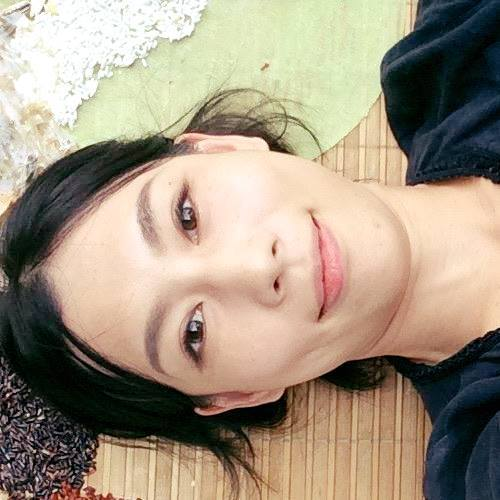

你的觀點
藝術家 │花崎 草 Kaya Hanasaki，高 郁宜 Yui Kao
策展人 │邱 柏廷 Chiu Po-Ting、蔡 繡如 Showzoo Tsai
表演時間│08/28 （日） 19:30～21:30
主辦單位│能盛興工廠國際藝術村
指導單位│文化部
《你的觀點 》
我們就站立在能盛興
一個人正看進我的眼睛。一個人瞧著，就在我凝視的地方。 一個人正把注意力放在我們握住的手上。一個人正把童年回 憶灌注在我們踏著的布料上。
跟藝術家或策展人的意圖迥異，觀眾正以他的視角及觀點， 分享著這件作品的創造。然而，這些觀點是處在評論者觀念 的陰影之下，而觀念則是專家說了算。
這個表演就是要邀請觀眾來參與拍攝跟書寫，分享自己視角 及觀點，以免其流失。我們會把這些影像跟文字，在接下來 十月能盛興的展覽中呈現。請帶著你的拍攝器具，我們也會 現場同步於網路轉播，網路上的任何人都可以線上參與。


表演者 Artists

花崎草生於1987年，於2012年取得東京藝術大學跨媒體藝 術碩士學位。行為藝術和裝置是她的主要創作領域。作品目 的在於緩和人類生活環境所塑造之價值觀，以及展望更美好 的人類社會系統。
近期行為作品包括「蚊帳の外」(台北市立美術館，台灣， 2015年)，「女性之路」(M.F.Husain美術 館，印度，2014年)，「趨光效應」(孵化空間，英國 ，2012年)。近年來的個展則包括「我的家園,我的寶 藏」（寶藏巖國際藝術村, 台灣2015年）, 《花崎草：2007-2012作品展》(( )藝文展演空間，台灣，2013年)，《英國藝術行動》 (素人の乱12号店，東京，2012年)。她亦於200 9年榮獲東京驚奇站實驗聲音與藝術節之鼓勵獎。

1980年生於台南市，跨域展演、人體模特兒 2009至今，現為能盛興工廠負責人之一。
近期劇場, 跨域展演包括「I am your past, You are my future」（中山創意基地，台北, 2015年）, 「安靜跨越邊界 一項跨越文化計畫」（蕭壠文化園區, 台南, 2014年）, 「我懂 懷素可能不會醉」（蕭壠文化園區， 台南，2014年）， 「自由花」（劇場藝術節, 法國馬賽，2011年） , 「深光」（南海藝廊, 台北, 2011年）「純淨的夜」（孤嶺街小劇場, 台北, 2011年）